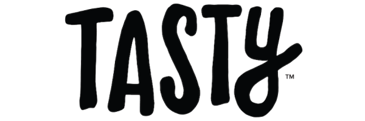
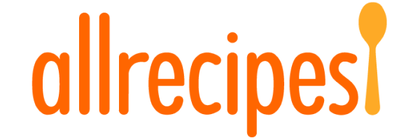
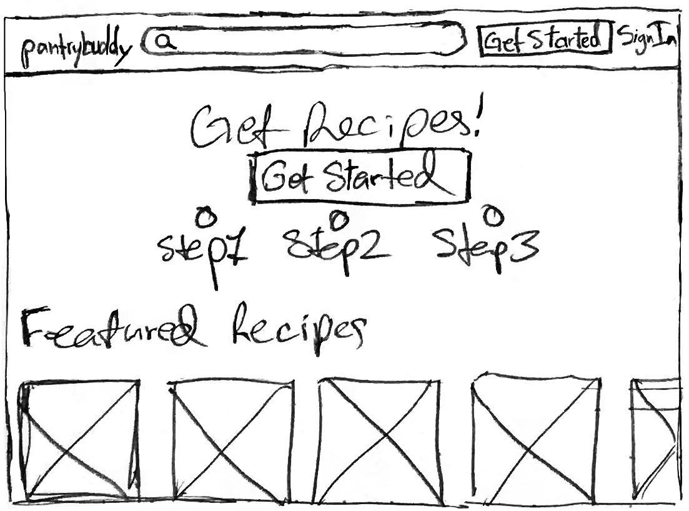
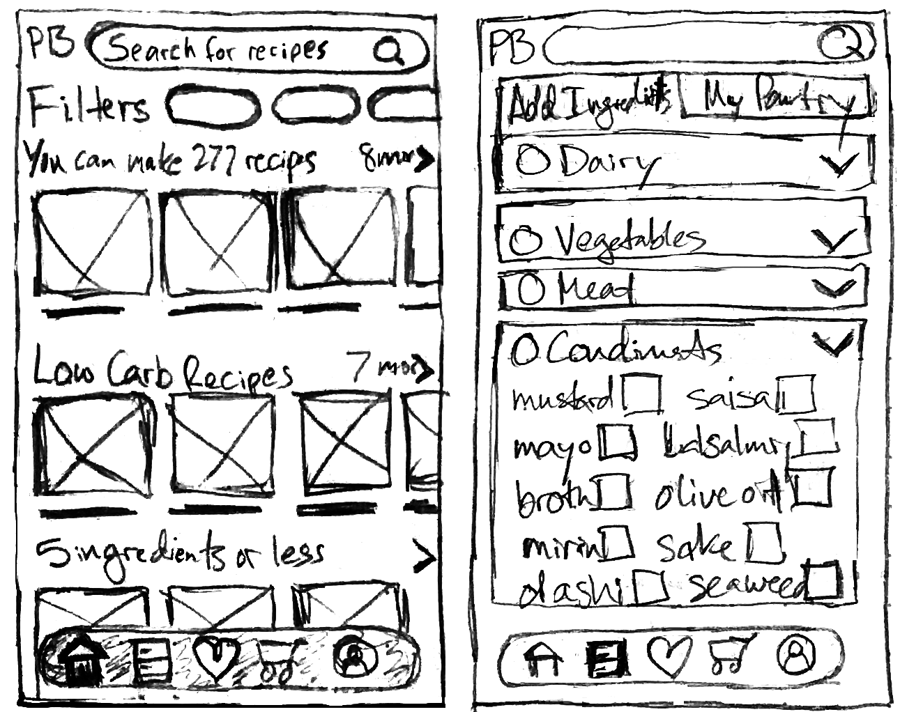
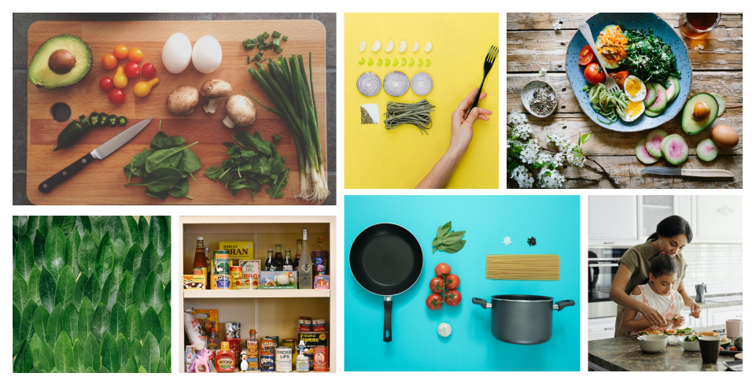
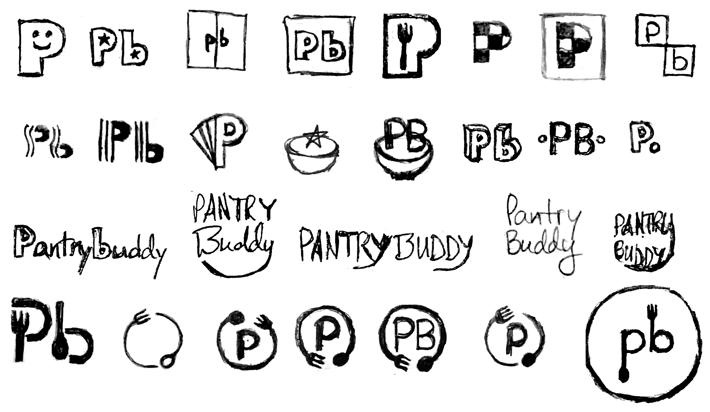
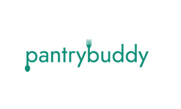
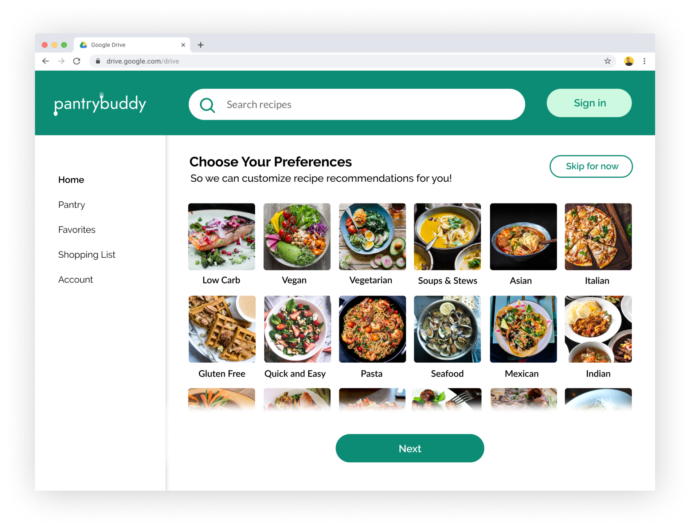
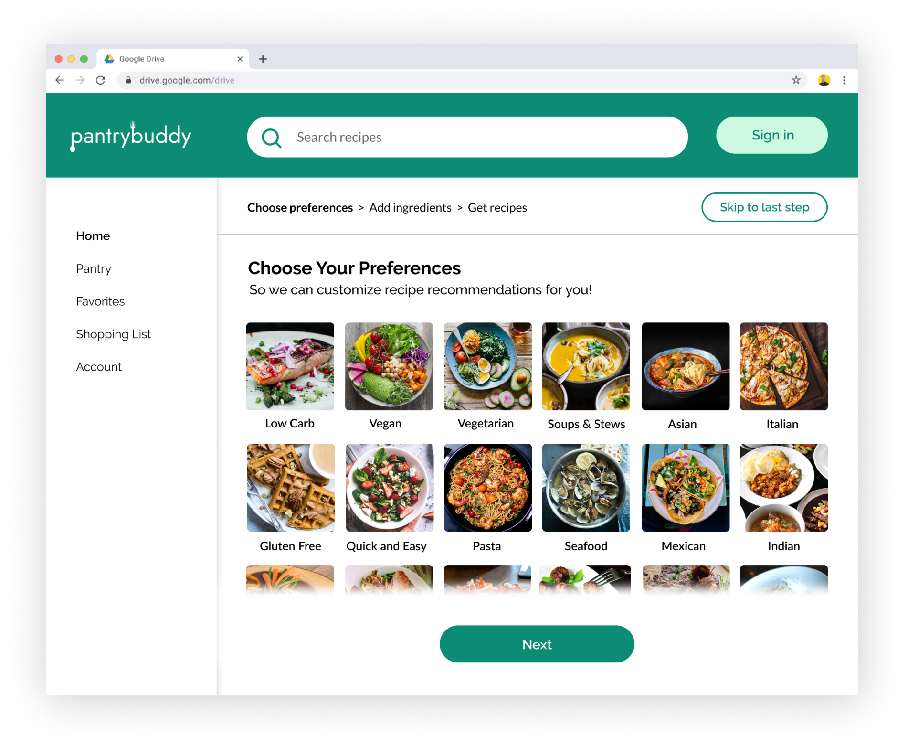

Pantrybuddy helps you find easy-to make recipes based on your preferences and ingredients you have in your kitchen.
Overview
I collaborated with a developer to redesign a recipe app he’d built by:
- Leading the end-to end design process from research, visual design, prototyping and testing to handoff
- Designing a responsive, progressive web app
- Doing a total re-brand with a new logo, assets, and clean, consistent UI
- Preparing designs for developer handoff
Role
UI/UX Designer
Deliverables
High fidelity Invision prototype, Competitive analysis, user personas, user stories, user flows, logo, brand style guide, UI design, developer deliverables
Duration
5 weeks
Tools used
Figma, Invision, Google Forms, Illustrator, Whimsical, Lookback.io, UsabilityHub, Zeplin
Problem
User testing on the original Pantrybuddy app showed that users were having a hard time using it to find recipes. The main roadblocks they were running into were:
- Being slowed down by a sign-up process that was introduced too early during onboarding
- Not able to input ingredients or get recipes

Solution
I worked with a developer to redesign the existing app and make it into a progressive web app with a:
- Smoother onboarding process where users input ingredients and get recipe recommendations
- Total re-brand with a consistent look and feel
- Easy navigation that allows users to signup, save recipes and make shopping lists

Research and Discovery
Starting with a usability audit
I started by testing the existing app on several users, none of whom were able to use the app successfully to find recipes. Roadblocks they ran into:
- Being slowed down by a sign-up process that was introduced before demonstrating the value of the app
- Confused by and not able to input ingredients in order to get recipes
Defining front end scope and strategy
To improve the experience and build an app fast, the developer recommended building a progressive web app in React that would look and function a lot like a mobile app. To increase the chances of showing users relevant recipes we knew we needed a large database of recipes to choose from. The cost of subscribing to large recipe databases was a bit prohibitive, so we decided to build our own recipe database of a few hundred recipes to build out the MVP. To increase the number of recipes matches based on ingredients we decided to build out the ingredient list based on all the ingredients in our recipe database.
Now that I knew I had more freedom to create a more comprehensive experience for users with a progressive web app I conducted more research to understand user needs in a recipe app.
User Research Survey
Next, I created a survey to discover our users’ needs when it comes to finding recipes for ingredients in their kitchens. From a pool of 32 respondents, I made several key findings
66%
struggle to decide what to make with their ingredients
50%
users google search recipes based on a key ingredient
52%
of users plan at the last minute and want quick recipes
67%
use a Mobile phone to search for recipes
Pain Points:
What’s your biggest frustration when deciding what to cook?
87% Finding recipes that fit my preferences
54% Planning meals ahead of time
Features:
What features do you need in a recipe app?
- Recommendations based on preferences
- Getting recipes from ingredients I have
- Nutritional information
- Rating and reviews
- Ability to favorite recipes
- Grocery list
Ingredients:
What are some of the most common ingredients you have in your kitchen?
Broccoli
Onion
Noodles
Chicken
Cheese
Eggs
User Interviews and Survey Analysis
I conducted follow-up interviews where I asked users about their responses and to record themselves standing in their kitchens deciding what to cook with their ingredients. Based on the findings I realized I needed to create a recipe app that would:
- Show recipe recommendations based on their dietary preferences
- Show recipe recommendations based on ingredients in their kitchen
- App needs to highlight most common ingredients so users can input them faster
- Need to highlight popular recipe categories like quick and easy, vegetarian, low carb ect
- Need to include favoriting a recipe feature
- Prioritize mobile experience because users will be standing in front of their fridge holding their phones while logging ingredients
Competitive Analysis
To find an opportunity for a recipe app to compete in the marketplace, I conducted a competitive analysis on three competitors: I chose Allrecipes because our users use it to find recipes and Tasty and Supercook because they also have a features that show you recipes based on ingredients you have.

Strengths
- Detailed recipe filtering
- Add ingredients by voice
- Shows basic 3rd party recipe information in a clear way
Weaknesses:
- Content gets stale, doesn’t refresh
- Information about the “local maker” is hard to find.
- Limited list of ingredients and therefore recipes
- Links out to 3rd party recipes which disrupts the experience

Strengths:
- High quality pictures, content and compelling videos.
- Clear, consistent layout of recipes
- Easy-to use ingredient finder
Weaknesses:
- Ingredient finder only allows you to input 3 ingredients and it doesn’t always work well
- It links out to 3rd party sites which disrupts the purchasing experience.

Strengths:
- Consistent format for each recipe
- Social proof from users uploading recipe photos to the site
- Customized recipe preferences
Weaknesses:
- No feature that allows you to input your ingredients and get recipes
- Varying quality of recipes and photos don’t look appetizing
Findings
These apps have their strengths but none have the combination of being able to add ingredients from your kitchen and showing you recipes based on your personal preferences. I found an opportunity to differentiate an app that:
- Lets you indicate dietary preferences AND add ingredients to get recipes
- Serves up fresh recipe inspiration with new and rotating content
- Improves the experience of reading 3rd party recipes with a consistent page format
User Personas
As trends in my research emerged, I conducted follow-up interviews with respondents to better understand their survey responses and learn more about how they decided what to cook at home. Based on trends of the data and follow-up interviews, I created three personas:
Daniel
Goals:
Loves cooking, wants to try new recipes, reduce waste/ trips to the store and get recipes based on dietary preferences.
Frustrations:
"I have a hard time thinking of what to make with the ingredients I have when I'm planning last minute. Seems like a lot goes to waste"
Alexa
Goals:
Wants quick, easy and generally healthy recipes
Frustrations:
“I spend too much time googling recipes that fit my preferences”
Erin
Goals:
Wants to eat more veggies and discover new recipes
Frustrations:
“I bookmark my favorite recipes in my browser but it's hard to keep track of them”
Information Architecture
Site Map
To translate the user flows into screens I created a site map to determine the structure of the app.

User Flows
Next, I created user flows to map out our highest priority user stories. The audit of the original app revealed that users were getting stuck with the signup process and not finding recipes. Research also showed that our users typically google recipes without signing up for a specific recipe app, so we decided to provide compelling recipe recommendations without requiring signup. Other features like adding a recipe to favorites or adding ingredients to a shopping list would require creating an account and provide a positive incentive for users to create a profile. Since it’s common for a user to skip through an onboarding process we decided that we’d still allow them to search for recipes but not show them any recipes until they added ingredients from their kitchen and encourage them to do so.


Sketching and wireframing
I sketched out wireframes for each screen needed to complete the tasks in the user stories and flows.
Low fidelity landing page desktop wireframes

Low

Early User testing
User testing with the wireframes was promising: users were able to indicate preferences and input ingredients during the onboarding process, however when it came to highlighting recipe categories based on on their preferences vs recipes based on ingredients from their home feed there was some confusion about navigating between those sub category pages and the home feed. To make it clearer to the users which page they were on I made the following changes:
- Indicated the homepage with the title “Pantrybuddy” at the top, and “Recipes” for the sub category pages
- Changed top nav to include a back arrow to navigate back to the main feed
- Improved the visual hierarchy of the bottom navbar
Before

After

Visual Design
Branding exploration and discovery
To kick start this process, I collaborated with the developer to create a moodboard of images and list of adjectives that would capture the look and feel of the Pantrybuddy brand. We choose brand characteristics like modern, friendly, fresh, easy, clean, healthy, delicious and simple.

Logo Development
We knew we wanted a stylised wordmark logo so I made dozens of sketches that would evoke the function of Pantrybuddy, incorporating food and pantry imagery.

Preference Testing
I refined the strongest sketches for the icon version of the logo and ran a preference test between two options. The icon with the fork and spoon incorporated emerged as the clear winner.

The Final Logo
The icon version had resonated with users, so I created a wordmark version of the icon with the spoon and fork incorporated into it. The concept reflects users’ desires to make and enjoy quick and easy meals based on ingredients in their kitchen. I used the font Jost for the wordmark because it fits the friendly, clean and modern brand characteristics.


Style guide and brand assets
I used the typeface Raleway for headers, and paired it with the font Lato for body copy. I built a bright, primary color palette around the green of the logo mark, with blues that are associated with trust and have a calming effect on home cooks who are in a hurry. Next, I created a style guide that instructs how to properly use brand assets in the app design.


Preference Testing
Using the new branding I created several iterations of the landing page. I wanted to pick a design that would demonstrate the value of the app and entice users to get started. I had to find a balance between explaining how the app worked without being too verbose so I conducted a preference test between two versions. The version with less text and appealing photography was the clear winner:
25%
preferred this design
75%
preferred this design
Prototyping and Testing
User testing high fidelity prototypes
I created high fidelity prototypes based on our wireframes and brand guidelines and tested the mobile version remotely on 3 users, asking them to stand in their kitchens while testing it and to complete these tasks:
- Browse for and filter different categories of products
- SIndicate their dietary preferences
- Log ingredients from their kitchen
- Filter through recipe category and find a recipe
Users were able to indicate preferences and log ingredients, but one user chose to skip through the onboarding experience entirely and was met with the notification on the home page to add ingredients, and no recipes, which was a negative experience, so I choose to include some recipe categories by default to give users some value even if they didn’t complete the onboarding process. Based on this round of testing I made the following changes:
- Show recipes to users who skip the onboarding proces
- Make recipe categories like “quick and easy more prominent
Before

After

Before

After

Testing the desktop prototype
After iterating on my mobile designs, I adapted them to desktop versions by putting the navigation on the left instead of the bottom and expanding the number of columns shown. I tested the desktop version in person on two users and asked them to complete these tasks:
- Browse for and filter different categories of products
- Indicate their dietary preferences
- Log ingredients from their kitchen
- Filter through recipe category and find a recipe
Users were able to complete the tasks successfully but some expressed confusion at what the “Skip for now” button meant during onboarding and what they could expect if they selected it. Since I had more screen real estate for the desktop version I made these changes:
- Show recipes to users who skip the onboarding proces
- Make recipe categories like “quick and easy more prominent
Before
After
Final Prototype
After much testing and iteration I finalized my desktop and mobile prototypes. Pantrybuddy is a responsive, easy to use, progressive web app that includes:
An easy onboarding process where users can:
- Input ingredients from their kitchen and get recipes
- Indicate dietary preferences to get custom recipe recommendations

A customized homefeed
- Highlights recipes based on ingredients and dietary preferences
- Easy navigation between the homefeed, pantry, favorites, shopping list and account settings

Recipe pages
- Show all recipes in the same layout, with no disruptive transition to 3rd party sites
- Shows all the recipe information in a clear, coherent layout
- Shows which logged ingredients you have or don’t have

Development
What I learned
- Provide value to users even if they skip onboarding, don’t penalize them for not using your app as intended.
- It’s important to clearly show your users where they are
- Starting with a mobile first approach is key - once I had designed and tested my mobile designs I was able to take those learnings and translate them into responsive designs
Developer handoff
- I organized the style guide, photos, vector assets in google drive folders for the developer
- I uploaded the figma files into zeplin for the developer to translate into code
- This app is currently in the development stage.
Back to top